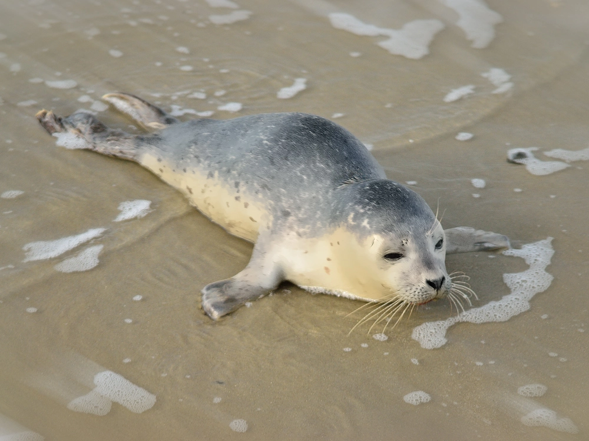

Robbe
Die Robben (Pinnipedia) sind ein Taxon im Wasser lebender Raubtiere (Carnivora) und gehören somit ökologisch zu den Meeressäugern. Die wissenschaftliche Bezeichnung „Pinnipedia“, abgeleitet von den lateinischen Wörtern pinna ‚Flosse‘ und pes ‚Fuß‘, bedeutet Flossenfüßer. Sowohl diese Bezeichnung als auch die Bezeichnung Wasserraubtiere findet man mitunter auch in der Fachliteratur. In einer älteren biologischen Systematik wurden die Wasserraubtiere den nicht mehr als Taxon anerkannten „Landraubtieren“ (Fissipedia) gegenübergestellt.
 Bild herunterladen